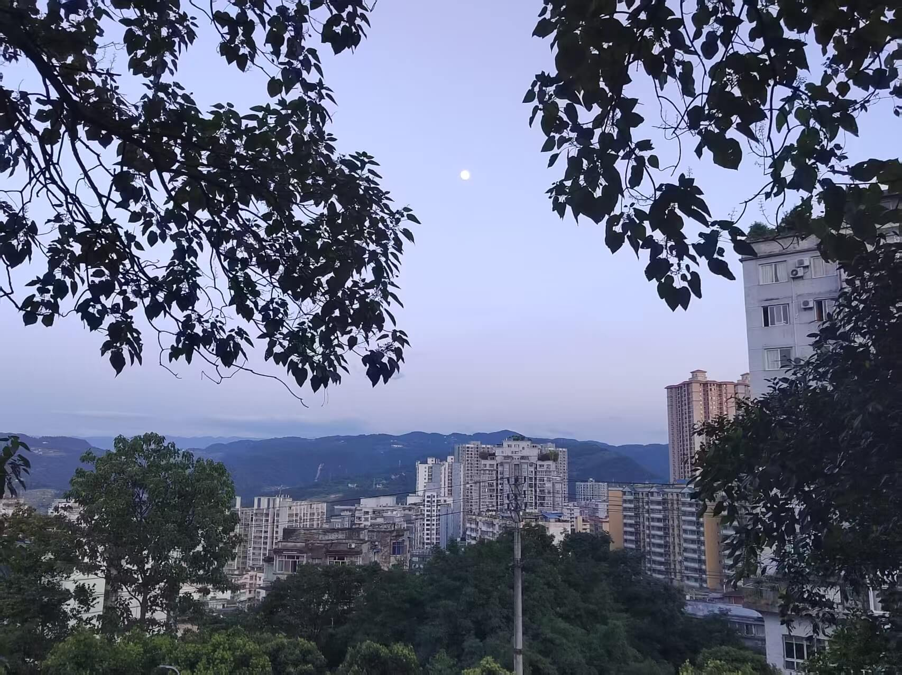
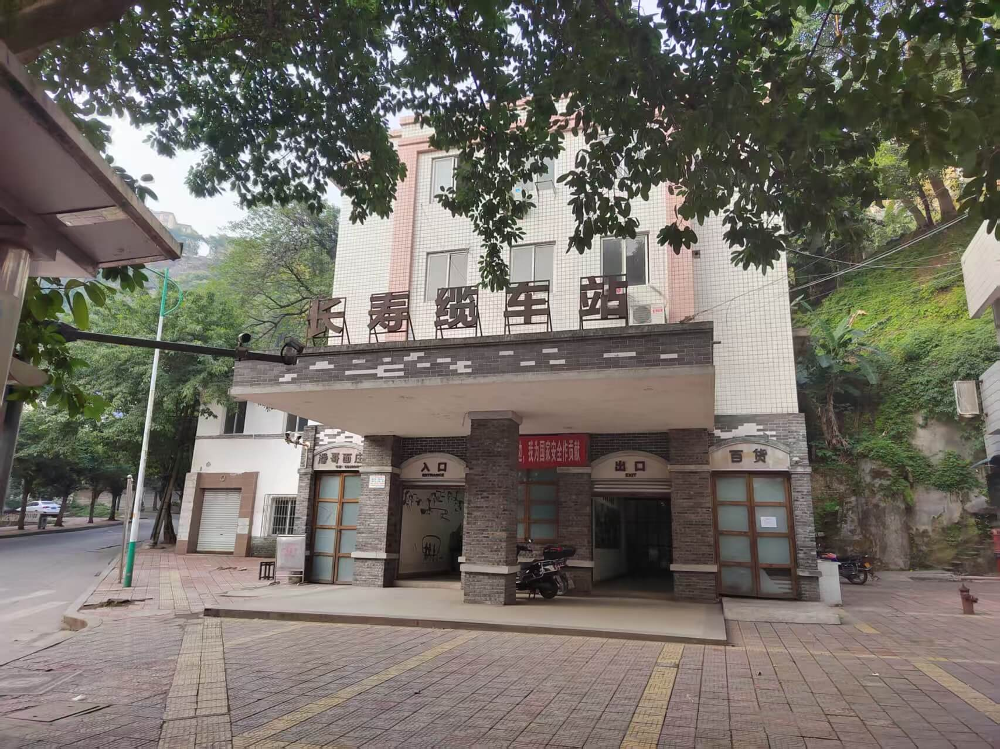

From 2022.03.27 to Forever (已陪伴 个日夜)
初识 · 一切开始的地方
2021年8月8日

世界很大，幸好遇见。那天，夏风漫过窗棂时，隔着距离，听见你的声音。没有画面，却记了很久。
心动 · 第一次约会
2022年7月7日

笨拙的对话，藏不住的心跳。原来电影里的情节，真的会发生在自己身上。
沉醉 · 第一次在江边吹晚风
2022年7月9日

夜的江风裹着水汽，拂过发梢时带着恰到好处的凉意。我们沿着江岸慢慢走，看对岸的灯火映在水面，碎成一片晃动的星光。没说太多话，却觉得每一阵风、每一声浪，都在替我们留住此刻的温柔。
暮色 · 第一次看日落
2022年7月10日
江水被落日镀上了一层流动的金，晚归的船划过，把金光搅碎成一片粼粼的波。我们并肩坐着，看天色从暖橘一点点沉入深蓝，直到对岸的灯火亮起，像撒了一地的星星。世界很安静，只听得见彼此的呼吸和江水轻拍岸边的声音。
并肩 · 第一次爬山
2022年7月11日

登顶的疲惫，在山风吹来的那一刻全散了。我们还没来得及喘口气，一轮圆月就从山后悄悄爬了上来。月光洒下来，把远处的城市轮廓勾勒得温柔又朦胧。整个世界都安静了，好像只有我们和这片清辉。那一刻，觉得所有的辛苦都值得了。
悠然 · 第一次坐缆车
2022年12月19日

缆车慢得像在散步，车厢晃晃悠悠的，发出“哐当”的声音。我们从山脚慢慢往上爬，看着两边的老房子和树一点点后退，没有刺激，只有一种说不出的安逸，像是坐进了这座城市的旧时光里。
这封信，只属于你
请输入你的生日，解锁我为你写的话
Our Next Chapter
我们未完待续的故事...
- 🏔️ 去冰岛看极光，在星空下许愿
- 🏠 一起装修我们的小家，每个角落都是爱
- 🐻 养一只肥猫，看它在我们脚边长大
- 💍 在一个只有我们知道的日子，给你一个家
- 👨👩👧👦 组建我们自己的小家庭，听孩子叫我们爸爸妈妈
- 👵🏻👴🏻 变成两个可爱的老头老太太，还手牵手去散步
默契大考验 ❤️
看看我们有多了解彼此！
准备好了吗？
星空下的誓言 ✨
用星辰，画出我们共同的答案。
点击“开始”，点亮属于我们的第一颗星